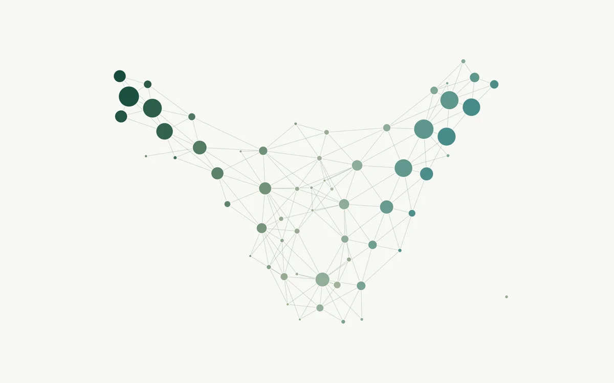

Undergraduate research
Mapping Scientific Literature with Topological Data Analysis
CBU AI & Machine Learning Lab · May 2026 – Present

Analyzing 3,490 scientific publications represented by 1,024-dimensional language-model embeddings to study relationships among research topics, papers, and researchers. I use Mapper, resampling experiments, and persistent homology to examine graph structure and coverage.
Methods & details
Built Mapper graphs using cosine-based DBSCAN and several analytical lenses, including PCA, neighborhood density, KDE, and local outlier factor. Designed 30-run resampling experiments and cross-lens overlap comparisons to examine how analysis choices affect graph structure and coverage.
Applied persistent homology to study connected components and cycles, and extended the analysis to approximately 1,000 researchers. This work also includes technology readiness assessments of research publications.